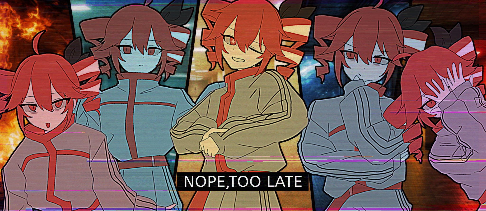
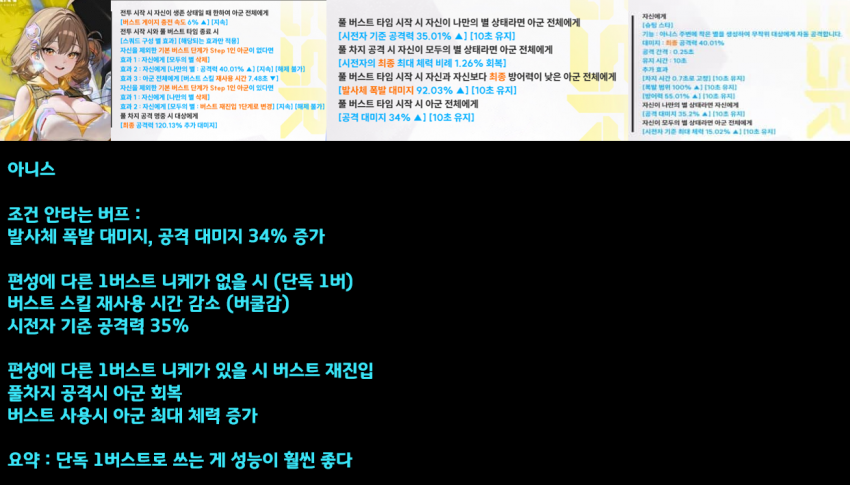
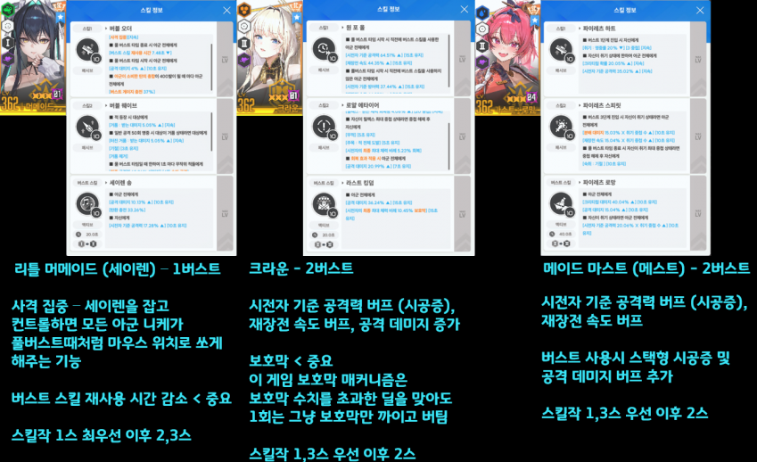
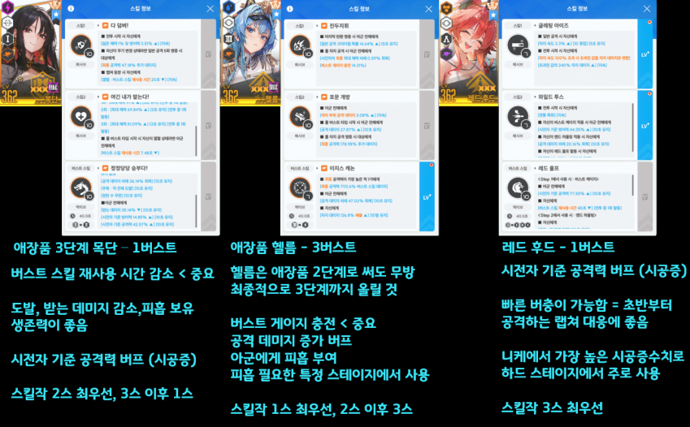
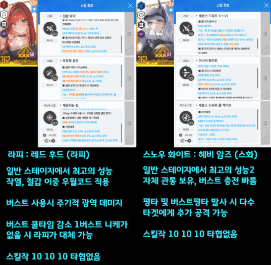
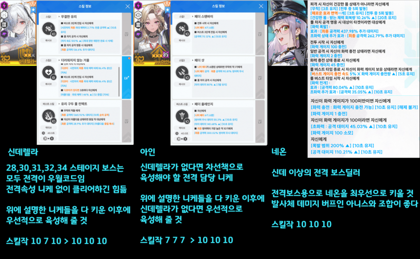
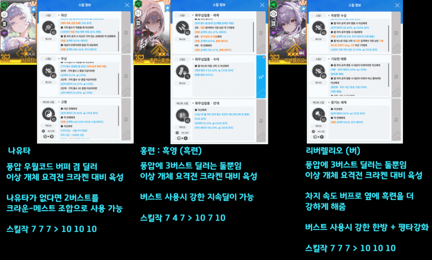
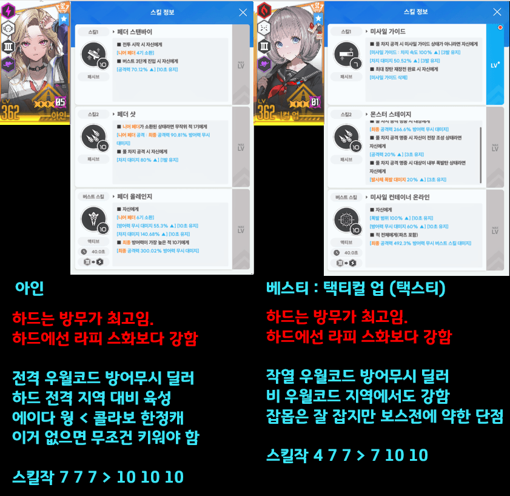

이 글을 읽기 전에
자신이 크라운이 없다 < 이 항목에 해당되면
리세를 하던 리세계를 사던 구매마일리지로 받던 크라운만큼은 꼭 가져와라
버프형 니케



3.5주년 업뎃 이후 아니스가 추가될 수 있음 아직 모름
육성 우선도 > 크라운, 아니스, 메이드 마스트, 헬름, 세이렌목단 이후 레드 후드
아니스가 있으니까 세이렌 목단 안키워도 되나요?->
절대 아님. 저 셋은 각자 다른 장점을 가지고 있음 -> 다 키워야함
아니스 = 압도적인 딜버프
세이렌 = 성능 좋은 버프와 압도적인 편의성
목단 = 크산테
최우선 육성 메인 딜러 니케

특정 우월코드용 메인 딜러 니케


하드 스테이지용 딜러(빨투 비틀기)

여기까지 다 키웠다면
솔레할거면 솔레 육성가이드, 스레나할거면 스레나가이드를 참고해서 다른 니케들을 키워보자